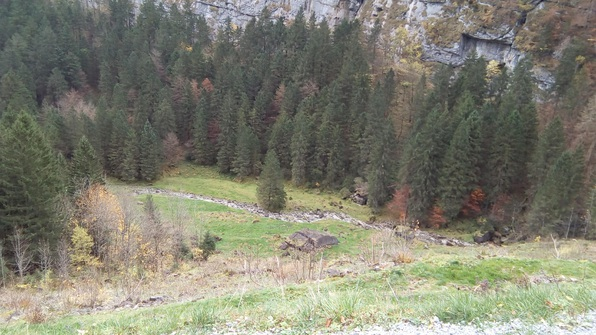
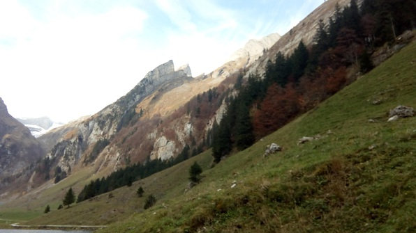
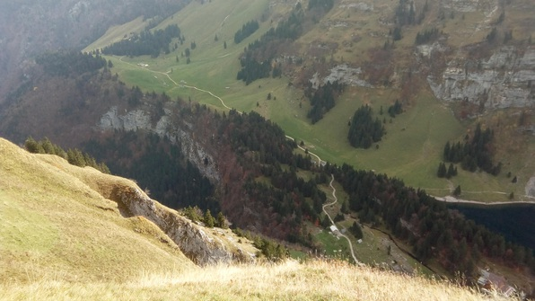

After 4 hours of sleep, rousted myself from bed, quickly prepped, headed to the HB. Grabbed some bread and cheese, then met Mihaela et al. for a second go at the Appenzell hike.
Meet her companions, two earth scientists Maria and Shannon, and a physicist, also Maria. Chat a bit and drift in and out of sleep on the ride there.
Hop out–and immediately, upon breathing the sweet fresh Appenzell air, all traces of tiredness fall away. We set out up some steep hills, navigating the terrain and the awkward conversational status of formed group + new guy (myself). Fortunately, the hills are less of an obstacle to myself than the others, which gives me extra leeway.

We hike along the lake and then up a steep set of switchbacks, up and up and up, fléching up rock after rock. The sun is super beautiful and the air is amazing. After we’ve ascended one particularly strenuous rise, Mihaela realizes she’s dropped her jacket and we have to go back and up again :)

Once we get to the “top”, we have to make a long longitudinal traverse. Get to chatting with the physicist Maria about her interest in ultra-fast pulsed lasers and optics, talk about the colloquium I went to with Fratallochi, etc. Very fun!

At the end of the traverse, make it to a guest-house/restaurant, but it turns out nobody wants to buy food anyway, and all the tables are full :P Sit down on a hillside and chow down.
Then begins the treacherous descent! Eventually we make it to pastures with trails carved through them. We roll down hills and say hi to cows :)
Then we enter the small hamlet of Weissbad, pop into a restaurant for some local Appenzeller beer and play cards, namely that awesome “Big 2” game that Betty taught me a few weeks ago :D
Catch the train back; it’s uneventful but we have good conversation.
Arrive in the HB, say goodbye and head straight to Aldi’s for food. Some 40 Franken lightened and some 5kg weighted, I head back up the stairs to Culmann. Work out a bit with my awesome stretchy band :D, shower, make myself some dinner. Abhi is downstairs and trying to plan his last 3 weekends–I tell him to not plan and just go with other people :) He makes me a glass of chai, and Mia, who’s cooking risotto with some Italian friends, gives me some salami and then a bite of the risotto, which is amazing.
Then I head up to write this log! Man, this is the life :D